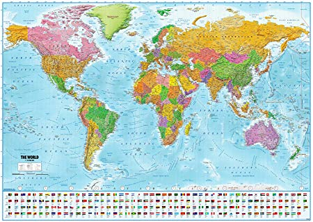

Welcome to my profile
I'm a IESEG student in Bachelor 1. I'm a football refery too. I'm passioned by sports since long years. I practised football, tennis, martial arts. I made my profil with the website of Lewagon.
discover lewagon's formationStudies and job
- Bachelor 1 at IESEG School of management
- Regional refery in France
Hobbies
- Football, sports in general
- Music
- Travel
Countries visited
- Bresil, India, Japan, United States, ...
- 
Objectives
- Be a federal refery. I practised it since 4 years and this is an oppartunity for me.
- Be successful in my management school